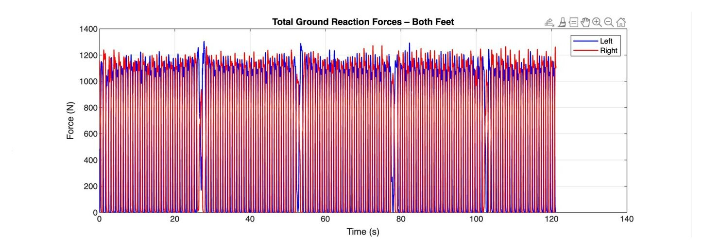
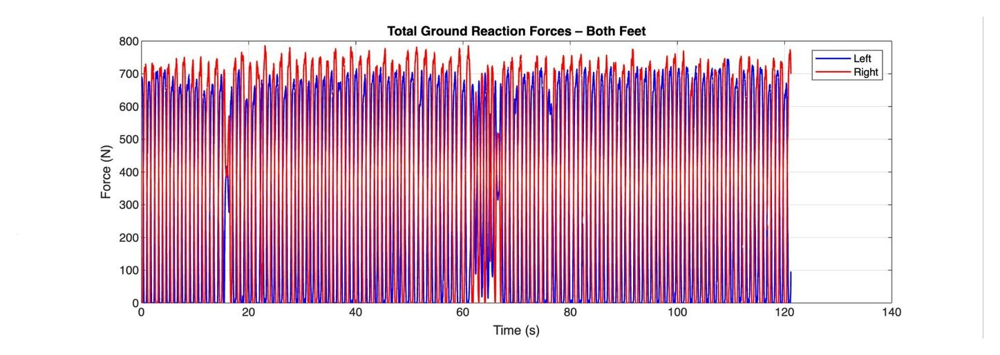
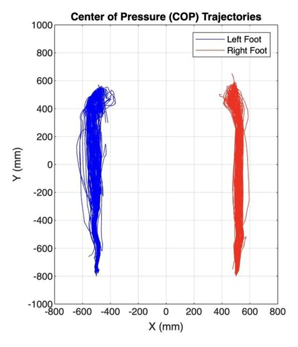
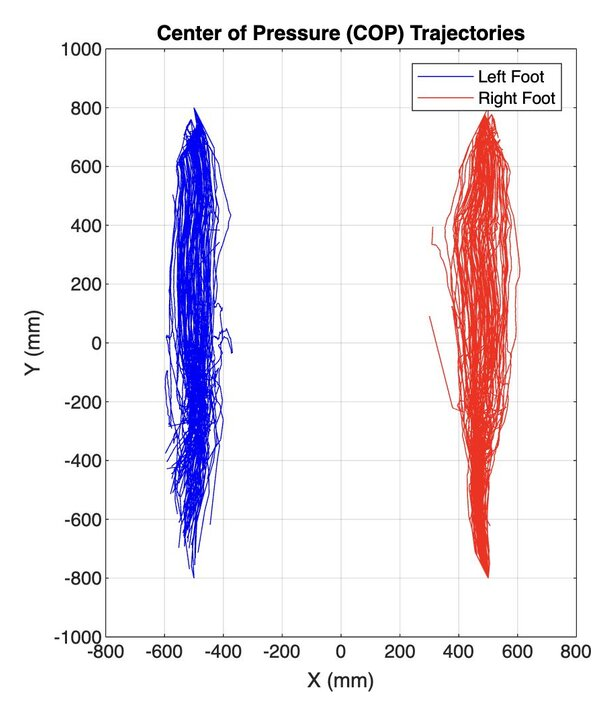

Engineering & code
Gait pressure analysis in Parkinson's
Using MATLAB and open plantar pressure data to see how Parkinson's disease shows up in the way people walk.
Who it's for: clinicians and engineers looking for simple, wearable ways to track how Parkinson's affects walking.
The question
Parkinson's disease affects around 10 million people worldwide, and one of its earliest effects is on how a person walks. There's no routine lab test for it, so small, measurable changes in gait can be useful clues for diagnosis and for tracking how treatment is working.
I wanted to know: using only pressure sensors in a shoe insole and some code, could I find measurable differences between people with and without Parkinson's?
The data
I used the Gait in Parkinson's Disease database from PhysioNet. Each participant walked at their own pace on level ground for about two minutes, wearing insoles with eight pressure sensors under each foot. The sensors recorded force 100 times per second.
I analysed 12 baseline walking trials: 6 from healthy control participants and 6 from people with Parkinson's.
My approach
I wrote MATLAB scripts that load each trial, calculate the gait metrics, and loop through all 12 participants to build a comparison table with group averages and standard deviations.
- Centre of pressure: a weighted average of the sensor forces and positions, calculated for every frame, shows how weight moves across each foot during a step.
- Cleaning the data: frames where a foot carried less than 50 N were treated as the foot being in the air and left out.
- Gait metrics: peak heel and toe force, total time each foot was on the ground, centre of pressure path length, and an asymmetry index comparing the average force on each foot.
- Visuals: force-over-time graphs, centre of pressure trajectories, and an animated pressure map of both feet.
Here's the core of the centre of pressure calculation:
% Centre of pressure: force-weighted average of sensor positions
COP_L_x = sum(L_sensors .* X_L, 2) ./ (sum(L_sensors, 2) + eps);
COP_L_y = sum(L_sensors .* Y_L, 2) ./ (sum(L_sensors, 2) + eps);
% Ignore frames where the foot isn't on the ground
valid_L = L_total > threshold; % threshold = 50 N
COP_L_x(~valid_L) = NaN;
COP_L_y(~valid_L) = NaN;
% How far the centre of pressure travelled
COP_path_L = sum(sqrt(diff(COP_L_x).^2 + diff(COP_L_y).^2), 'omitnan');What I found
On average, the Parkinson's group showed patterns that match what's described in the research on Parkinsonian gait:
- Weaker heel strike: peak heel forces were lower, suggesting a less complete heel-to-toe roll through each step.
- More time on the ground: each foot spent more of the walk in contact with the ground, consistent with slower, more cautious steps.
- Less balanced loading: the asymmetry index was higher, meaning force was spread less evenly between the two feet.
| Metric | Control (6) | Parkinson's (6) |
|---|---|---|
| Peak heel force, left foot | 367 ± 127 N | 260 ± 153 N |
| Peak heel force, right foot | 368 ± 134 N | 229 ± 111 N |
| Time on the ground, left foot | 77.4 ± 2.6 s | 80.7 ± 4.0 s |
| Time on the ground, right foot | 76.5 ± 2.0 s | 80.6 ± 3.4 s |
| Asymmetry index | 0.038 ± 0.027 | 0.053 ± 0.024 |
Force over time
In the healthy example, the left and right force curves overlap closely in a steady rhythm. In the Parkinson's example, the right foot consistently carries more load than the left, and there's an irregular break partway through the walk.


Centre of pressure
Each line traces how weight moved under a foot during one step. The healthy trajectories form tight, consistent bands with a slight curve near the ball of the foot. The Parkinson's trajectories are wider and less consistent from step to step.


Limitations and what I'd do differently
Looking back at this project, there's a lot I'd approach differently now:
- Sample size: 6 participants per group is small, and I didn't run statistical tests. The standard deviations overlap a lot, so these are trends, not proven differences.
- Body weight: heavier people put more force through their feet, so I'd normalize forces by body weight before comparing participants.
- Per-step timing: I measured total time on the ground across the whole walk. Measuring stance time for each individual step would be more precise and easier to compare with published research.
- Units: the sensor positions in the dataset are relative coordinates rather than true distances, so centre of pressure path lengths are only meaningful compared with each other.
What I learned
This was my first time taking raw sensor data all the way to results: loading it, cleaning it, calculating metrics, and turning them into visuals someone else could understand. It also taught me that getting a result is only half the job. Checking whether it's actually reliable, and being clear about what it can and can't tell you, matters just as much.
← Back to all work